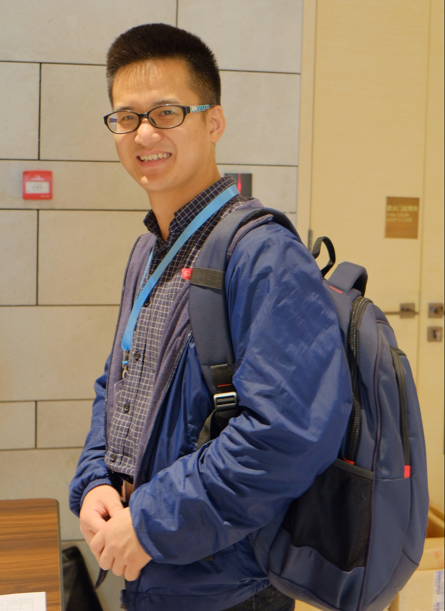

|  | Yongpan Zou (邹永攀)Assistant Professor |
Biography
I am currently an Assistant Professor in the College of Computer Science and Software Engineering of Shenzhen University, since September 2017. I obtained my Ph.D in February 2017 in the CSE Department of HKUST, under the supervision of Professor Lionel M. Ni. Prior to this, I received my B.E in School of Chemical Engineering and Technology, Xi'an Jiaotong University in July 2013.
My research interest covers Wearable and Mobile Computing, Human-computer Interaction and Ubiquitous computing.
News
2017/07/18, our paper “ABAid: Navigation Aid for Blind People using Acoustic Signals” is accepted by IEEE MASS 2017. This is a paper first-authored by a UG student under my supervision.
2017/06/15, our paper about Wi-Fi Radar is accepted by IEEE COMMAG
Publications
* Corresponding Author
Conference Papers
ABAid: Navigation Aid for Blind People using Acoustic Signals
Zehui Zheng, Weifeng Liu, Rukhsana Ruby, Yongpan Zou, Kaishun Wu
in Proceedings of IEEE MASS, Florida, USA, 2017. [Paper][BibTex]TagFree: Passive Object Differentiation via Physical Layer Radiometric Signatures
Yongpan Zou, Yuxi Wang, Shufeng Ye, Kaishun Wu, Lionel M. Ni
in Proceedings of IEEE Percom, Hawaii, USA, 2017. [Paper][BibTex]
WiG: WiFi-Based Gesture Recognition System
Wenfeng He, Kaishun Wu, Yongpan Zou, Zhong Ming
in Proceedings of IEEE ICCCN, Las Vegas, USA, 2015. [Paper][BibTex]
SmartSensing: Sensing Through Walls with Your Smartphone! (Best Paper Award)
Yongpan Zou, Guanhua Wang, Kaishun Wu, Lionel M. Ni
in Proceedings of IEEE MASS, Philadelphia, USA, 2014. [Paper][BibTeX]
We Can Hear You with WiFi!
Guanhua Wang, Yongpan Zou, Zimu Zhou, Kaishun Wu, Lionel M. Ni
in Proceedings of ACM Mobicom, Hawaii, USA, 2014. [Paper][BibTex]
Journal Papers
Wi-Fi Radar: Recognizing Human Behavior with Commodity Wi-Fi
Yongpan Zou, Weifeng Liu, Kaishun Wu, Lionel M. Ni
in IEEE Communications Magazine, Volume16, Issue 2, pp. 381-393, 2017. [Paper][BibTex]
GRfid: A Device-free Gesture Recognition System Using COTS RFID Device
Yongpan Zou, Jiang Xiao, Jinsong Han, Kaishun Wu, Yun Li, Lionel M. Ni
in IEEE Transactions on Mobile Computing, Volume16, Issue 2, pp. 381-393, 2016. [Paper][BibTex]
SmartScanner: Know More in Walls with Your Smartphone!
Yongpan Zou, Guanhua Wang, Kaishun Wu, Lionel M. Ni
in IEEE Transactions on Mobile Computing, Vol. 15, Issue 11, pp. 2865-2877, 2016. [Paper][BibTex]
We Can Hear You with Wi-Fi! (Featured Article)
Guanhua Wang, Yongpan Zou, Zimu Zhou, Kaishun Wu, Lionel M. Ni
in IEEE Transactions on Mobile Computing, Vol. 15, Issue 11, pp. 2907-2920, 2016. [Paper][BibTex]
Projects
 |
BehavickerThe Indoor WiFi Radar Sense (IWRS) project is a system to detect, localize, and identify human motions and the environmental contexts using WiFi signals, such as human detection, line-of-sight condition identification, breath detection and lips reading. |
 |
BiLockThe Indoor WiFi Radar Sense (IWRS) project is a system to detect, localize, and identify human motions and the environmental contexts using WiFi signals, such as human detection, line-of-sight condition identification, breath detection and lips reading. |
Professional Activities
TPC Member for
IEEE Globecom 2017, IEEE ICPADS 2017, VTC 2018-Spring
Reviewer for
ICPADS 2016, Ubicomp 2016, Globecom 2017, TMC, COMMAG, ToN
Group Members
PG Students
Weifeng Liu, Shufeng Ye, Changsheng Zhou, Xuejin Zhou, Junjun Bao, since 2015
Mengqi Chen, Qiang Yang, Meng Zhao, since 2016
UG Students
Jingchuan Xu (now in Tencent), Zehui Zheng (now in University of Victoria with full scholarship), Jinyong Wu (now in Baidu), Dan Wang (now recommended to PG in SZU without entrance examination), since 2015
Misc.
Reading, reading…